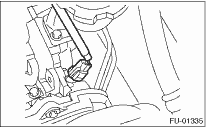
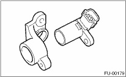

1. Disconnect the ground cable from the battery.

2. Disconnect the connector from camshaft position sensor.

3. Remove the bolt which installs camshaft position sensor to support.
4. Remove the bolt which installs camshaft position sensor support to camshaft cap LH.
5. Remove the camshaft position sensor and the support as a unit.
6. Remove the camshaft position sensor itself.
